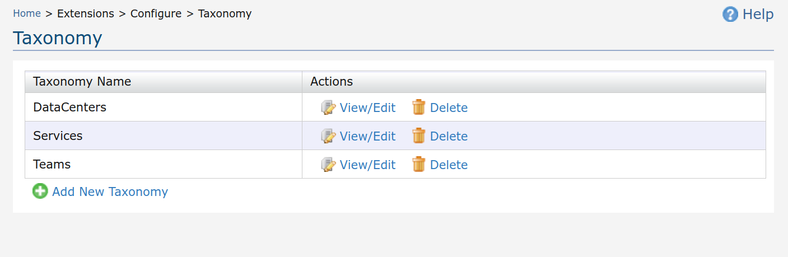
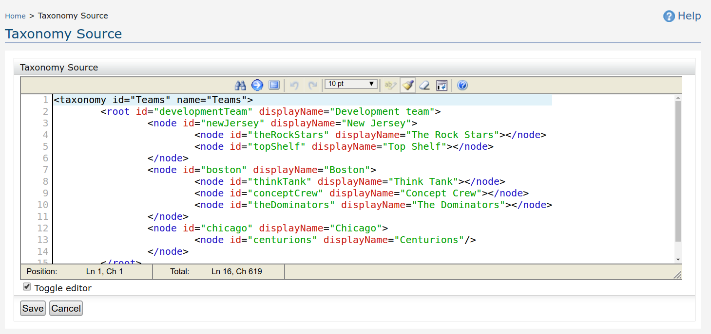

In the navigator under "Extensions" click on "Taxonomy". A list of available taxonomies is shown.

In the above Taxonomy configuration page, click on "Add New Taxonomy". A configuration page with a sample taxonomy configuration is shown. Click on save to save the configuration or cancel to return to available taxonomy configuration list.
Click on corresponding "Edit" link found under each taxonomy configuration, from taxonomy configuration list. A configuration page with the taxonomy configuration is shown.

Click on corresponding "Delete" link found under each taxonomy configuration, from taxonomy configuration list.
Following is the template of the taxonomy configuration. In the configuration, the xml element structure should strictly followed. The configuration elements and their usage is defined inline with the elements.
<taxonomy id="Teams" name="Teams"> <root id="developmentTeam" displayName="Development team"> <node id="newJersey" displayName="New Jersey"> <node id="theRockStars" displayName="The Rock Stars"></node> <node id="topShelf" displayName="Top Shelf"></node> </node> <node id="boston" displayName="Boston"> <node id="thinkTank" displayName="Think Tank"></node> <node id="conceptCrew" displayName="Concept Crew"></node> <node id="theDominators" displayName="The Dominators"></node> </node> <node id="chicago" displayName="Chicago"> <node id="centurions" displayName="Centurions"/> </node> </root> </taxonomy>